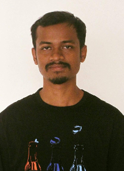

|
Albert Mundu
|
 |
Albert Mundu
M.Tech – Ph.D (2016 - )
Department of Information Technology
IIIT – Allahabad
phc2016001@gmail.com
|
Education
M.Tech. – Ph.D., Information Technology, IIIT – Allahabad (Pursuing)
B.Tech., Computer Science and Engineering, NERIST, Deemed University, 2013.
Diploma, Computer Science and Technology, Tripura University, Central University, 2010.
Projects
Academics
Website for State Goa, a Course Project, Tripura Institute of Technology, Agartala, Tripura, India [2008]
Network Security using extended RSA cryptosystem, a final Diploma Project, Tripura Institue of Technology, Agartala, Tripura, India [2010]
Designed and developed Institute Website “www.nerist.ac.in”, a contribution to NERIST, Itanagar, Arunachal Pradesh, India [Up Duration: 2012 - 2016]
Mechanism for Wormhole Detection in Mobile Ad-hoc Network (MANET), a final Ungraduate Project, NERIST, Itanagar, Arunachal Pradesh, India [2013]
Designed and developed Cluster Middleware - Load Balancer, a Course Project, IIIT, Allahabad, UP., India [2017]
Multi-Metric Learning for Face Verification in the unconstraint environment, a Summer Project, IIIT, Allahabad, UP., India [2017]
Internship
|